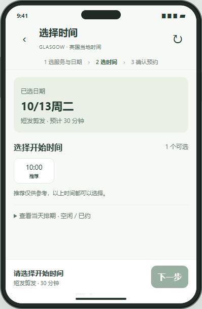
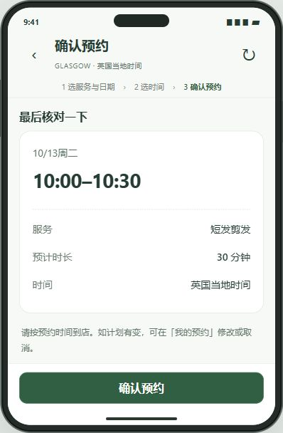
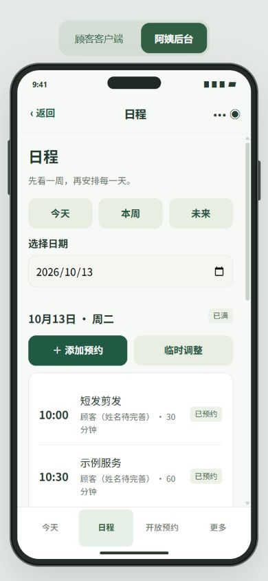
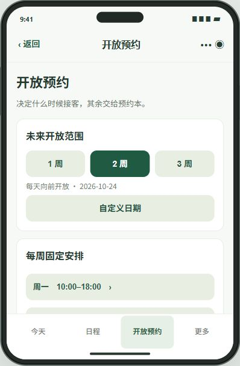
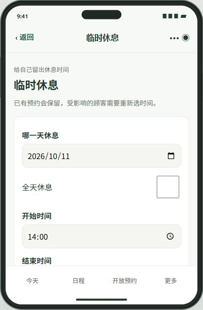

Digital Products & UX / Service & Transformation
Glasgow Salon Booking
One shared diary. Two clear experiences.
A customer and shop booking prototype for a Glasgow salon, translating scattered chat coordination and a paper diary into a service-aware appointment workflow.
Local shared prototype · field research planned- My contribution
- Problem framing, service flow, UI and AI-assisted prototyping
- Scope
- Customer booking + shop diary and availability


01 / Context & scope
How might booking stay simple when service lengths and opening hours change?
Existing background notes describe an owner-managed salon coordinating appointments through WeChat and a paper diary. Scattered records, varying service lengths and manual schedule changes motivate the prototype. These notes establish the context; they are not a completed interview study.
Design objectives
- Reduce repeated messages about available times.
- Fit the complete service into a valid opening window.
- Preserve affected appointments when the shop changes its schedule.
Customer
Choose a service and time, understand the duration, then find and change the appointment.
Shop owner
See the day, enter a manual booking, adjust opening hours and resolve affected appointments.
Different entry habits
The brief includes Chinese and non-Chinese customers. Language and access requirements still need validation; the current demo is not a verified multilingual release.
02 / Information architecture
This reflects the current customer preview and connected full shop interface. Date and fixed-time filtering are modes within the first step, rather than additional page levels.
Customer · three-step booking
- L1 · Service + date / My bookings
- L2 · Legal start times / appointment detail
- L3 · Review and confirm / reschedule / cancel confirmation
Shop · task-based navigation
- L1 · Today / Diary / Availability / More
- L2 · Day detail / affected bookings / weekly opening rules
- L3 · Add or edit appointment / temporary closure / restore availability
03 / The end-to-end journey
Choose
Select a service and available date.
Check
See starts that fit the full duration.
Confirm
Review service, duration and local time.
Manage
Find the same appointment in My bookings and the shop diary.
Recover
If hours change, retain the booking and arrange a new time.
Back preserves a valid selection. Changing the service or date clears an incompatible time. Rescheduling reuses the selection flow; cancellation requires its own confirmation.
04 / Interface walkthrough
Actual screens from the existing running prototype. Read the sequence here, or try the flow yourself below. Accounts, prices and appointments shown are demo fixtures.
Service duration is visible before choosing a day. Earliest availability and date status make the next action clear, while unavailable dates remain explicit.

Only starts that accommodate the whole service are offered. The detailed diary is expandable, keeping the main choice compact.

Date, start and end, service and duration are brought together. The page explicitly identifies the booking as a local preview.

The shop sees appointments against the day, rather than reconstructing them from messages. Customer and shop actions use one booking core.

Weekly opening rules, the future booking horizon and temporary closures are separated, so recurring settings are not confused with a one-off change.

A temporary closure communicates that existing appointments remain visible and need rescheduling. The interface does not imply a real notification has been delivered.
05 / Decisions & state logic
Duration drives availability
An empty start time alone does not guarantee space for a long service.
- Prototype response
- Check the full interval against opening windows, breaks and other appointments.
- What to validate next
- Test short and long services near breaks and closing time.
One shared state
Separate calendars create conflicting versions of the same appointment.
- Prototype response
- Customer and shop views use a shared local booking core and in-memory data source.
- What to validate next
- Compare both views after booking, rescheduling, cancellation and a shop-side change.
Recover rather than erase
Deleting an affected booking would hide an unresolved customer commitment.
- Prototype response
- Keep the record visible in an affected / reschedule state; preserve context during recovery.
- What to validate next
- Ask the owner to close a period and explain which customers still need action.
Try the existing prototype
Choose a service → an available day → a start time → review. Confirm only a simulated appointment, then open the shop view to inspect the same date. Try My bookings for rescheduling and cancellation. All data are local fixtures.
Local review only. This prototype is not a live commercial service.
The interactive preview is available in the local review environment when its demo service is running. Screenshots remain available here.
06 / Research & field testing
Planned fieldwork · no findings claimed yet
The next phase connects the prototype to real people and settings. The following is a research plan, not a report of completed activities.
Observe a real booking
With permission, map how a request moves from a conversation to the diary, including changes and interruptions. Record steps without retaining private customer details.
Validate the operating rules
Confirm service lengths, opening windows, same-day policy, buffers and preferred language with the owner. Demo fixtures are not final business rules.
Test both sides of a change
Ask a customer to book and reschedule, then ask the owner to adjust a period and identify affected appointments. Record completion, errors, time and assistance.
Field evidence & iteration log
Awaiting first field visit. Site photos, anonymised interview findings and test-to-iteration comparisons will be added here when available.
Site photographs & observation
Add consented photos with date, setting and the workflow observed.
To be addedInterview findings
Add anonymised notes, participant context and the insight supported.
To be addedTesting & iteration
Connect a task and observed issue to a design change and a retest.
To be added07 / Progress & release plan
The portfolio runs an isolated build of the existing customer and full shop source. Both use a local shared service; restarting it resets in-memory appointments. CloudBase persistence, real WeChat identity, reliable notifications and production deployment are unfinished. No real customer is charged or notified.
- Now · customer and full shop interfaces connected locally
- Next · owner interview, observation and two-sided task testing
- Then · refine service rules and run an agreed limited pilot
- Before release · persistent data, identity, notification delivery and recovery checks
Local implementation checks do not establish usability or business impact. Release and a real pilot require further validation and explicit approval.
Download case PDF ↓